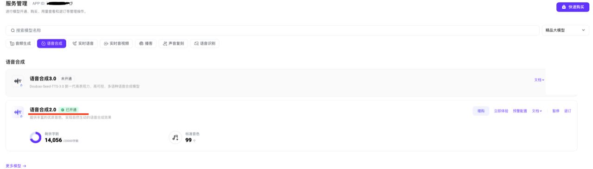
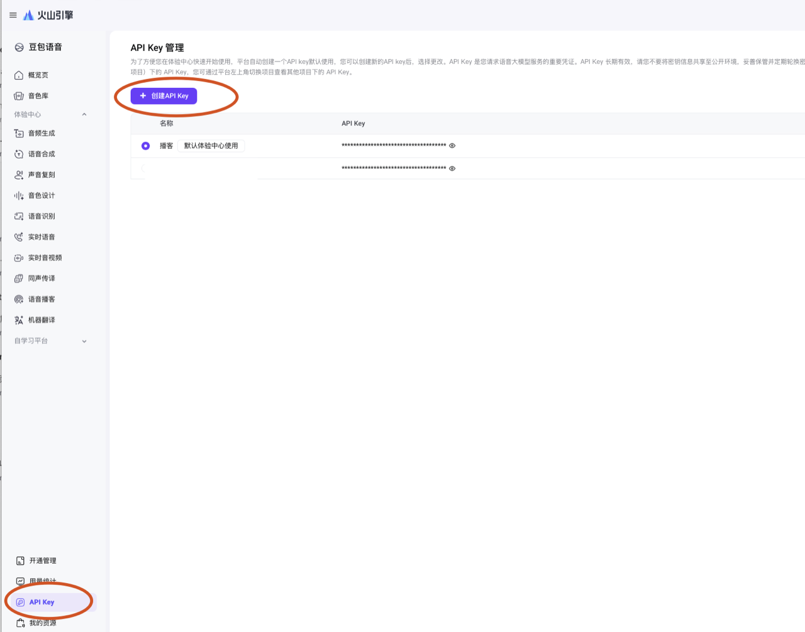

注册账号并完成少量充值
前往 platform.deepseek.com 登录账号，在控制台确认账户余额可用（新号或按量付费充值少量额度即可生成数十期播客）。
控制台 → 充值 / 余额管理
拾声集采用自带密钥（BYOK）架构，所有 API Key 仅存储在你的本机，不经任何中转服务器。下方按客户端「模型与语音」设置面板顺序整理，提供官方控制台直达、一键复制参数与常见报错排查。
所有示例密钥（如 sk-xxxxxxxx）均为占位符，请替换为你在官方控制台创建的真实密钥。
| 用途 | 预设 / 供应商 | 控制台入口 | Base URL / 资源标识（可复制） | 推荐模型与鉴权 |
|---|---|---|---|---|
| 剧本大模型 | DeepSeek（首选） | platform.deepseek.com |
https://api.deepseek.com
|
填 Key 后点「获取模型列表」，从实时列表中选当前主力对话模型 |
| 剧本 / 识图 | 豆包 · 火山方舟 | console.volcengine.com/ark |
https://ark.cn-beijing.volces.com/api/v3
|
拉取已开通模型，或手动填模型 ID / ep-xxx（v1.0.1 起已原生保留 /api/v3 路径） |
| 语音合成 | 火山引擎 · 豆包语音 V3 | console.volcengine.com/speech/app |
seed-tts-2.0
|
开通「大模型语音合成」；单 API Key（推荐）或 AppID + Access Key |
| 语音合成 | MiniMax Speech | platform.minimaxi.com |
speech-2.8-turbo
|
仅需单个 API Key，内置句间节流防限流 |
| 免费试听 | Edge TTS（内置） | 无需注册语音控制台 | 免语音 Key · 开箱即用 |
免语音 Key 即可试听（生成新播客仍需先配剧本大模型 Key）；偶发限流时建议切到火山或 MiniMax |
逻辑拆解清晰、双人对话自然且性价比高，是拾声集客户端默认推荐的剧本生成底座。
前往 platform.deepseek.com 登录账号，在控制台确认账户余额可用（新号或按量付费充值少量额度即可生成数十期播客）。
进入 API Keys 页面新建密钥，命名后立即复制以 sk- 开头的完整密钥（形如 sk-xxxxxxxx）。关闭弹窗后无法再次查看明文。
打开拾声集右上角「模型与语音」，预设选 DeepSeek，粘贴 Key 后点击「获取模型列表」，从实时返回列表中选择当前主力对话模型（如 deepseek-chat 已下线则选列表中最新对话模型，如 deepseek-flash）即可保存。
https://api.deepseek.com
sk-xxxxxxxxxxxxxxxx（替换为你的真实密钥）点「获取模型列表」后选择实时返回的主力对话模型中文日常口语自然、少念稿腔，且支持长图截图直接识字；支持模型列表拉取或手动填模型 ID / 推理接入点。
在火山方舟控制台开通需要使用的豆包大模型；若采用推理接入点方式，创建一个接入点并记下其 ID（形如 ep-xxxxxxxx）。
在火山方舟控制台左侧找到 API Key 管理，新建并复制密钥（形如 sk-xxxxxxxx 或平台生成的 Key）。
在拾声集预设选「豆包 · 火山方舟」，填入 Key 后可点「获取模型列表」；若列表未返回全部模型，直接把模型 ID 或 ep-xxx 手动填入模型名称框即可（v1.0.1 起已原生保留 /api/v3 路径，仍用旧版 v1.0.0 请先升级）。
https://ark.cn-beijing.volces.com/api/v3
sk-xxxxxxxxxxxxxxxx（方舟 API Key 占位符）拉取已开通模型，或手动填模型 ID / ep-xxxxxxxx小天 2.0 + Vivi 2.0 对话级双人音色自然度高、国内直连稳定，支持单 API Key（推荐）或 AppID + Access Key 鉴权。
console.volcengine.com/speech/app 开通服务时，请务必选择并开通「大模型语音合成」（对应资源 ID seed-tts-2.0），不要错开成「普通语音合成 / 短文本语音合成」，否则合成时会报错未开通或资源不匹配。
进入豆包语音控制台选择目标项目，在「开通管理」找到「大模型语音合成」并确认已开通（支持按量付费或免费体验额度）。
新版单 API Key 流程：在目标项目的「开通管理」确认已开通服务后，进入「API 管理」获取单个 API Key（推荐）；若沿用旧版应用凭证，可在「API服务中心」查看 AppID 与 Access Token。
在拾声集「模型与语音 → 语音合成」选择火山引擎 · 豆包语音 V3，模型保留 seed-tts-2.0，填入凭证后即可一键测试语音连通性。
seed-tts-2.0
单 API Key（推荐，填 xxxxxxxx）或 AppID + Access Key
seed-tts-2.0）开通即可，无需开通上方的 3.0。
新手配好剧本大模型 Key 后，语音合成可先用内置免费的 Edge TTS（免语音 Key）试听体验；想要更自然的停顿、呼吸感与稳定高并发，再升级为火山豆包 V3 或 MiniMax Speech。
前往 platform.minimaxi.com → 接口密钥（API Keys）创建一个密钥（形如 sk-xxxxxxxx），在拾声集语音合成选择 MiniMax Speech、模型保持默认的 speech-2.8-turbo 即可。无需额外配置 Group ID，客户端内置句间节流防止限流。
无需注册语音账号或填写语音 Key，安装打开拾声集即可直接试听语音合成效果（从原文生成新播客仍需先配好剧本大模型 Key）。由于 Edge 语音属于非官方公开接口，网络高峰期偶发限流；如需稳定高并发，建议配置火山豆包 V3 或 MiniMax。
检查 API Key 首尾是否误带空格或换行，确认 Base URL 未多写 /chat/completions 尾巴（DeepSeek 填 https://api.deepseek.com，火山方舟填 https://ark.cn-beijing.volces.com/api/v3）。
若列表未返回全部模型，直接在「模型名称」手动填写已开通的模型 ID 或接入点 ep-xxxxxxxx 即可。若您仍在使用 v1.0.0 旧版遇到 404，升级到 v1.0.1 即可自动保留 /api/v3 路径。
90% 的情况是在控制台误开了「普通语音合成」。请回到 console.volcengine.com/speech/app 确认目标项目已开通「大模型语音合成」，且模型选择 seed-tts-2.0。
微软 Edge 在线接口存在不定时限流。若保持同一语音供应商、音色、模型及未改动的句子文本重试，已合成句子会秒级命中本地缓存；若切换语音供应商（如火山豆包 V3 或 MiniMax）、音色、模型或修改了台词，则需要重新合成并按新供应商标准计费。
还没有安装桌面端？前往官网首页下载 v1.0.1 桌面正式版（免装 Node.js）。